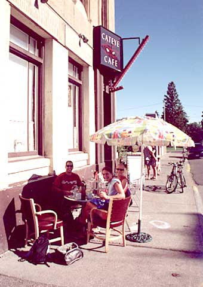

Breakfast at the Cat Eyes Cafe, because the Feed was closed. The sign on the door read; Trash is extremely hard to pull out of the toilet. Little white crosses on the side of the road mark every fatal accident; needless to say we kept our eyes open. Brake fluid leak uncovered. We decided to take our watches off and feel time. Found nice camp spot under some power lines with nothing but, autos, trains, fireworks, planes, and gunshots to listen to. Feeling adventurous, we explored into some dense woods and found a bear/mountain lion lean to about twenty feet in the woods and about fifty feet from our campsite. That night we lit a big fire and left it burning.